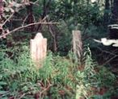

by
Stefan Bielinski
Isaac Ja. Truax was born in May 1726. He was the son of Jacob and Elizabeth La Grange Truax of Schenectady.
In June 1750, he married Maria Wyngaert at the Albany Dutch church. By 1768, ten children were christened at Albany and several others were baptized elsewhere.
He ran the "Halfway House" tavern/inn located at the mid-point of the King's Highway route between Albany and Schenectady. Later, he would be described as a "jolly good tavern keeper and [a] good friend" and characterized as a "very eccentric person" and disposed toward "fastidious and gaudy dress."
His "old red tavern" located just inside the northern boundary of the Manor was an eighteenth-century landmark and stopping point on the road through the pine barrens. In 1754, he was commissioned an ensign in a Schenectady-based company of the Albany County militia.In November 1780, he was identified as a tavernkeeper hen he posted a bond of fifty pounds guaranteeing the good behavior of his kinsman with the Albany Commissioners.
In 1790, his home was configued in the Watervliet section of the Federal census for Albany County. The homes of two sons were located nearby!
Maria Wyngaert Truax died in 1802 leaving Isaac with a large family of grown children and grandchildren - many of whom lived nearby. Isaac Jacob Truax filed his will in November 1804. It provided for his living children as well as the children of those who had passed on. He died in April 1808 and was buried in the family cemetery created in response to instructions in his will. The will passed probate on June 19.
notes
 Sources: The life of Isaac Ja. Truax is CAP biography number 1678. This sketch is derived chiefly from family and community-based resources. For the tavern and its significance, see Lois Feister, "Analysis of the Ceramics Found at the Vereburg Tavern Site," Man in the Northeast no. 10 (1975). See also, Don Rittner, ed., Pine Bush: Albany's Last Frontier (Albany, 1976).
Sources: The life of Isaac Ja. Truax is CAP biography number 1678. This sketch is derived chiefly from family and community-based resources. For the tavern and its significance, see Lois Feister, "Analysis of the Ceramics Found at the Vereburg Tavern Site," Man in the Northeast no. 10 (1975). See also, Don Rittner, ed., Pine Bush: Albany's Last Frontier (Albany, 1976).
first posted: 12/30/04; updated 11/25/10